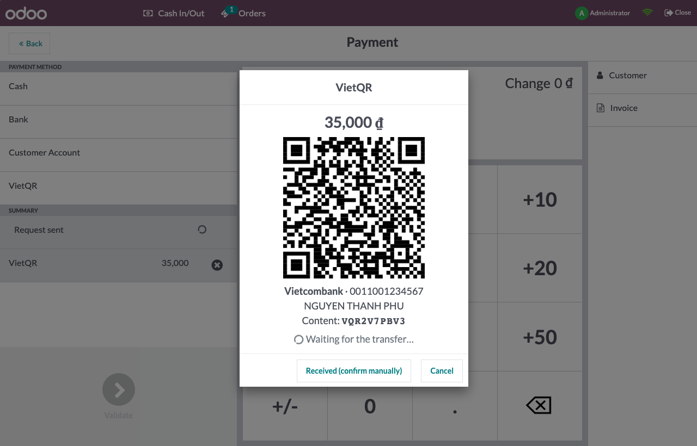

Customers in Vietnam pay by scanning a VietQR code with any banking app. This module adds VietQR as a payment method of the Odoo Point of Sale: the cashier sees a QR code with the exact amount and a unique transfer note, and the payment is confirmed as soon as the bank transfer reaches your account.

The QR code for the order, waiting for the transfer.
Questions and requests: thanhphu2643@gmail.com